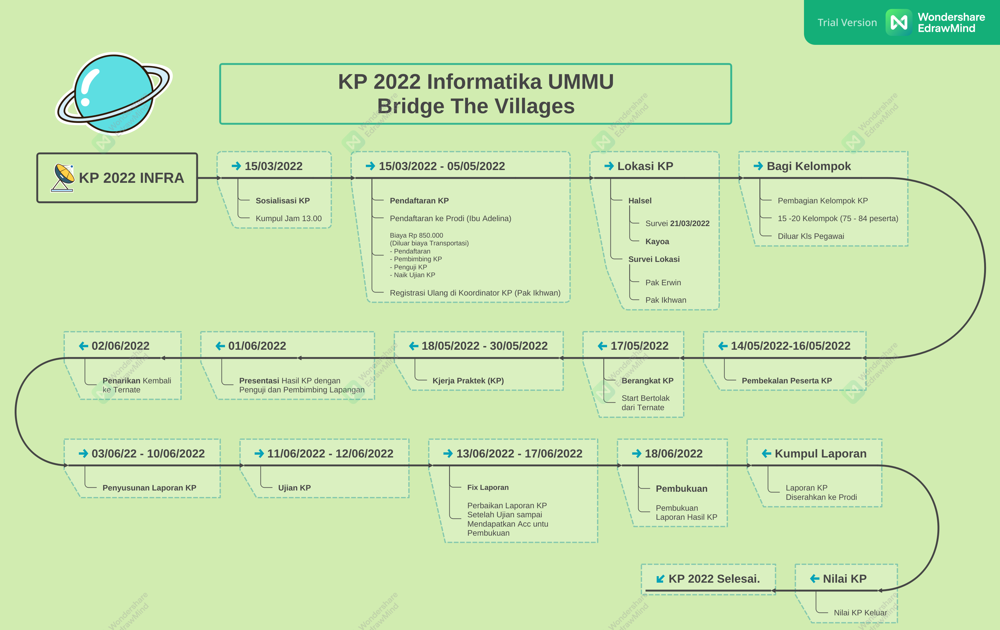

KP Informatika UMMU 2022
Mind Map KP 2022 INFRA

Alur KP 2022 INFRA
1. Sosialisasi - 15/03/2022
- Sosialisasi KP 2022 INFRA di LAB Jaringan Lt.3.
2. Pendaftaran KP - 15/03/2022 - 05/05/2022
- Pendaftaran KP 2022 ke Prodi (Ibu Adelina)
- Biaya KP 2022, Rp 850.000
- TIDAK Termasuk Biaya Transportasi ke Lokasi
- Untuk Pendaftaran
- Untuk Pembimbing KP
- Untuk Penguji KP
- Naik Ujian KP
- Daftar Ulang ke Koordinator KP (Pak Ikhwan), LINK Registrasi Ulang.
4. Lokasi KP 2022 INFRA
-
Lokasi KP 2022 INFRA adalah di Kepulauan Kayoa Kab. Halsel.

5. Bagi Kelompok
- Setiap Kelompok Terdiri dari 6-8 orang Mahasiswa dan Seorang Dosen Pembimbing.
- Jumlah kelompok kisaran 12 - 16 Kelompok.
6. Pembekalan - 14/05/2022 - 16/05/2022
- Semua Mahasiswa sudah harus tiba kembali di Ternate dari Liburan SEBELUM Tanggal 14/05/2022.
- Pembekalan KP 2022 INFRA berlokasi di Ruang LAB Jaringan,
- Waktu Pembekalan berturut-turut dari tanggal 14,15 dan 16 bulan Mei (05) 2022.
[NEW Update] Pembekalan 15/05/2022 - 16/-05/2022
- Pembekalan Umum hari Ahad 15 Mei, Jam 09.30 - Selesai,
Gabungan SI dan INFRA - Pembekalan KP Teknis INFRA hari Senin 16 Mei Jam 09.30 - Selesai, oleh Pak Erwin dan Kak Fatur.
- Waktu Berangkat naik KM. dan Tiba Turun KM. pake Jas Almamater RAPI (strika jas tu).
- Foto bersama saat berangkat dan tiba pake Jas Almamater sambil memegang spanduk/baliho
- Semua Mahasiswa harus ADA dan Pakai ID Card
7. Berangkat ke Lokasi - 17/05/2022
- Tanggal 17 Mei berangkat ke Lokasi KP 2022 -> Kayoa
- Berangkat menggunakan KM. C…Dua.., dengan Dermaga Tujuan Guraping Kayoa
- Berangkat Pagi jam 07.30, semua Mahasiswa sudah harus siap di Dermaga SEBELUM jam tersebut.
- Kelompok yang di Pulau Kayoa harus membawa Sepeda Motor.
8. Di Lokasi KP - 18/05/2022 - 30/05/2022
- Kerja Praktek INFRA 2022 di Lokasi Masing-masing
- Setiap Kelompok Membuat Laporan KP
- Menjelang Selesai KP, Setiap kelompok agar Mempersiapkan Laporan Sementara untuk Dipresentasikan di tempat KP masing-masing.
9. Presentasi Laporan - 01/06/2022
- Setiap Kelompok sudah siap dengan Laporan KP-nya
- Setiap Kepompok Mempresentasikan Laporannya KP-nya di Tempat KP-nya masing-masing.
- Menyerap masukan dan saran untuk laporan yang lebih baik.
- Persiapan Kembali Berkumpul di Guraping Kayoa untuk persiapan Penarikan kembali ke Ternate.
10. Penarikan Kembali Ke Ternate - 02/06/2022
- Semua kelompok sudah berkumpul di Guraping untuk Siap-siap kebali ke Ternate
- Berangkat Dari Kayoa Jam 7.30 kembali ke Ternate.
11. Penyusunan Laporan Akhir KP - 03/06/2022 - 10/06/2022
- Setiap Kelompok menyusun Laporan KP-nya yang siap untuk diujikan.
- Setiap Kelompok agar Melengkapi Laporan KP-nya dengan Foto Dokumentasi
- Menulis Laporan mengikuti Format atau Template yang disediakan oleh Prodi.
- Jadikan Jurnal PKM
12. UJIAN KP 2022 - 11/06/2022 - 12/06/2022
- Ujian KP 2022 INFRA pada tanggal 11 dan 12 Juni 2022
13. FIX Laporan - 13/06/2022 - 17/06/2022
- Setiap kelompok segera memperbaiki Laporannya setelah ujian Jika terdapat catatan perbaikan.
- Perbaiki laporan sampai memdapatkan ACC untuk Pembukuan dari Pembimbing dan Penguji.
14. Pembukuan Laporan KP - 18/06/2022
- Segera dibukukan jika sudah mendapatkan ACC untuk itu.
15. Kumpul Lporan KP
- Jika Sudah dibukukan segera kumpul hasil akhir laporan KP 2022 masing-masing kelompok ke Prodi dalam bentuk cetak/buku.
- Kumpul Laporan dalam bentuk Soft Copy (file DOCX dan PDF)
16. Nilai KP 2022
- Nilai KP 2022 keluar setelah semua proses selesai.
17. KP 2022 INFRA SELESAI.
- KP 2022 INFRA INFORMATIKA UMMU dinyatakan SELESAI.
by: kordinator.kp2022.informatika@ummu